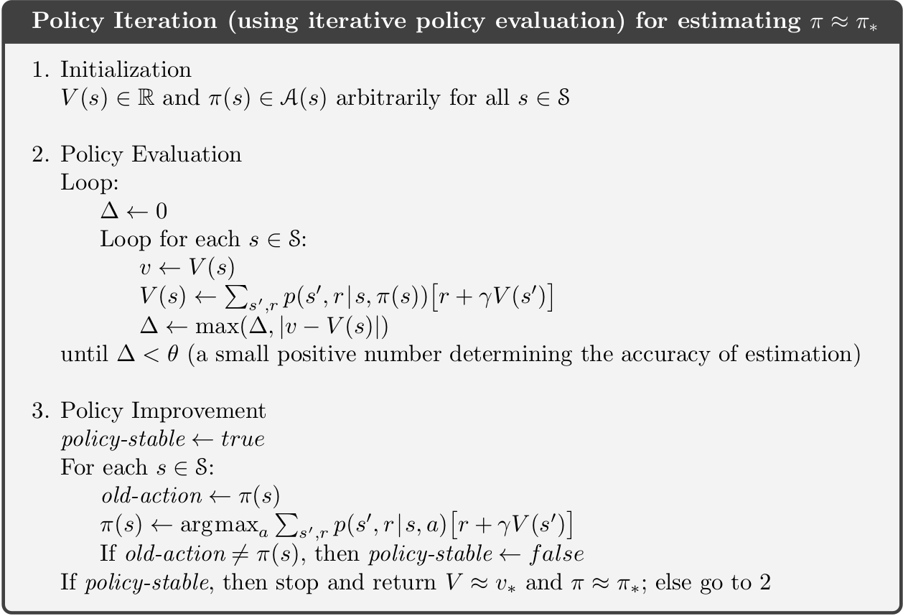
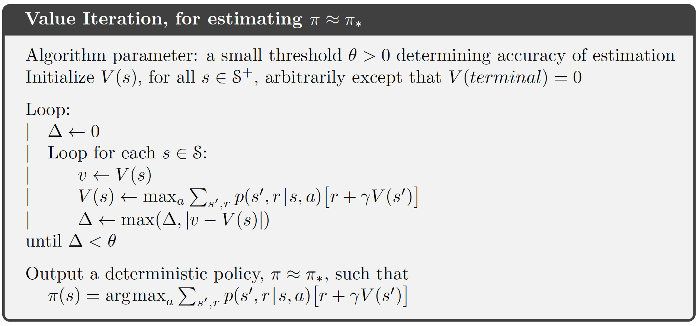

Slides for this module can be seen
here.
You do not have to look at them before the lecture!
8 Dynamic programming
The term Dynamic Programming (DP) refers to a collection of algorithms that can be used to compute optimal policies of a model with full information about the dynamics, e.g. a Markov Decision Process (MDP). A DP model must satisfy the principle of optimality. That is, an optimal policy must consist for optimal sub-polices or alternatively the optimal value function in a state can be calculated using optimal value functions in future states. This is indeed what is described with the Bellman optimality equations.
DP do both policy evaluation (prediction) and control. Policy evaluation give us the value function \(v_\pi\) given a policy \(\pi\). Control refer to finding the best policy or optimizing the value function. This can be done using the Bellman optimality equations.
Two main problems arise with DP. First, often we do not have full information about the MDP model, e.g. the rewards or transition probabilities are unknown. Second, we need to calculate the value function in all states using the rewards, actions, and transition probabilities. Hence, using DP may be computationally expensive if we have a large number of states and actions.
Note the term programming in DP have nothing to do with a computer program but comes from that the mathematical model is called a “program”.
8.1 Learning outcomes
By the end of this module, you are expected to:
- Describe the distinction between policy evaluation and control.
- Identify when DP can be applied, as well as its limitations.
- Explain and apply iterative policy evaluation for estimating state-values given a policy.
- Interpret the policy improvement theorem.
- Explain and apply policy iteration for finding an optimal policy.
- Explain and apply value iteration for finding an optimal policy.
- Describe the ideas behind generalized policy iteration.
- Interpret the distinction between synchronous and asynchronous dynamic programming methods.
The learning outcomes relate to the overall learning goals number 2, 4, 6, 7, 8, 10 and 12 of the course.
8.2 Textbook readings
For this week, you will need to read Chapter 4-4.7 in Sutton and Barto (2018). Read it before continuing this module. A summary of the book notation can be seen here.
8.3 Policy evaluation
The state-value function can be represented using the Bellman equation Equation 7.2: \[ v_\pi(s) = \sum_{a \in \mathcal{A}}\pi(a | s)\left( r(s,a) + \gamma\sum_{s' \in \mathcal{S}} p(s' | s, a) v_\pi(s')\right). \tag{8.1}\]
If the dynamics are known perfectly, this becomes a system of \(|\mathcal{S}|\) simultaneous linear equations in \(|\mathcal{S}|\) unknowns \(v_\pi(s), s \in \mathcal{S}\). This linear system can be solved using e.g. some software. However, inverting the matrix can be computationally expensive for a large state space. Instead we consider an iterative method and a sequence of value function approximations \(v_0, v_1, v_2, \ldots\), with initial approximation \(v_0\) chosen arbitrarily e.g. \(v_0(s) = 0 \: \forall s\) (ensuring terminal state = 0). We can use a sweep with the Bellman equation to update the values:
\[\begin{equation} v_{k+1}(s) = \sum_{a \in \mathcal{A}}\pi(a | s)\left( r(s,a) + \gamma\sum_{s' \in \mathcal{S}} p(s' | s, a) v_k(s')\right) \end{equation}\]
We call this update an expected update because it is based on the expectation over all possible next states, rather than a sample of reward from the next state. This update will converge to \(v_\pi\) after a number of sweeps of the state-space. Since we do not want an infinite number of sweeps we introduce a threshold \(\theta\) (see Figure Figure 8.1). Note the algorithm uses two arrays to maintain the state-value (\(v\) and \(V\)). Alternatively, a single array could be used that update values in place, i.e. \(V\) is used in place of \(v\). Hence, state-values are updated faster.

8.4 Policy Improvement
From the Bellman optimality equation Equation 7.4 we have
\[ \begin{align} \pi_*(s) &= \arg\max_{a \in \mathcal{A}} q_*(s, a) \\ &= \arg\max_{a \in \mathcal{A}} \left(r(s,a) + \gamma\sum_{s' \in \mathcal{S}} p(s' | s, a) v_*(s')\right). \end{align} \tag{8.2}\] That is, a deterministic optimal policy can be found by choosing greedy the best action given the optimal value function. If we apply this greed action selection to the value function for a policy \(\pi\) and pick the action with most \(q\): \[ \begin{align} \pi'(s) &= \arg\max_{a \in \mathcal{A}} q_\pi(s, a) \\ &= \arg\max_{a \in \mathcal{A}} \left(r(s,a) + \gamma\sum_{s' \in \mathcal{S}} p(s' | s, a) v_\pi(s')\right), \end{align} \tag{8.3}\] then \[ q_\pi(s, \pi'(s)) \geq q_\pi(s, \pi(s)) = v_\pi(s) \quad \forall s \in \mathcal{S}. \] Note if \(\pi'(s) = \pi(s), \forall s\in\mathcal{S}\) then the Bellman optimality equation Equation 7.4 holds and \(\pi\) must be optimal; Otherwise, \[ \begin{align} v_\pi(s) &\leq q_\pi(s, \pi'(s)) = \mathbb{E}_{\pi'}[R_{t+1} + \gamma v_\pi(S_{t+1}) | S_t = s] \\ &\leq \mathbb{E}_{\pi'}[R_{t+1} + \gamma q_\pi(S_{t+1}, \pi'(S_{t+1})) | S_t = s] \\ &\leq \mathbb{E}_{\pi'}[R_{t+1} + \gamma (R_{t+2} + \gamma^2 v_\pi(S_{t+2})) | S_t = s] \\ &\leq \mathbb{E}_{\pi'}[R_{t+1} + \gamma R_{t+2} + \gamma^2 q_\pi(S_{t+2}, \pi'(S_{t+2})) | S_t = s] \\ &\leq \mathbb{E}_{\pi'}[R_{t+1} + \gamma R_{t+2} + \gamma^2 R_{t+3} + ...)) | S_t = s] \\ &= v_{\pi'}(s), \end{align} \] That is, policy \(\pi'\) is strictly better than policy \(\pi\) since there is at least one state \(s\) for which \(v_{\pi'}(s) > v_\pi(s)\). We can formalize the above deductions in a theorem.
Let \(\pi\), \(\pi'\) be any pair of deterministic policies, such that \[\begin{equation} q_\pi(s, \pi'(s)) \geq v_\pi(s) \quad \forall s \in \mathcal{S}. \end{equation}\] That is, \(\pi'\) is as least as good as \(\pi\).
8.5 Policy Iteration
Given the policy improvement theorem we can now improve policies iteratively until we find an optimal policy:
- Pick an arbitrary initial policy \(\pi\).
- Given a policy \(\pi\), estimate \(v_\pi(s)\) via the policy evaluation algorithm.
- Generate a new, improved policy \(\pi' \geq \pi\) by greedily picking \(\pi' = \text{greedy}(v_\pi)\) using Eq. Equation 8.3. If \(\pi'=\pi\) then stop (\(\pi_*\) has been found); otherwise go to Step 2.
The algorithm is given in Figure Figure 8.2. The sequence of calculations will be: \[\pi_0 \xrightarrow[]{E} v_{\pi_0} \xrightarrow[]{I} \pi_1 \xrightarrow[]{E} v_{\pi_1} \xrightarrow[]{I} \pi_2 \xrightarrow[]{E} v_{\pi_2} \ldots \xrightarrow[]{I} \pi_* \xrightarrow[]{E} v_{*}\] The number of steps of policy iteration needed to find the optimal policy are often low.

8.6 Value Iteration
Policy iteration requires full policy evaluation at each iteration step. This could be an computationally expensive process which requires may sweeps of the state space. In value iteration, the policy evaluation is stopped after one sweep of the state space. Value iteration is achieved by turning the Bellman optimality equation into an update rule: \[ v_{k+1}(s) = \max_a \left(r(s,a) + \gamma\sum_{s'} p(s'|s, a)v_k(s')\right) \] Value iteration effectively combines, in each of its sweeps, one sweep of policy evaluation and one sweep of policy improvement, since it performs a greedy update while also evaluating the current policy. Also, it is important to understand that the value-iteration algorithm does not require a policy to work. No actions have to be chosen. Rather, the state-values are updated and after the last step of value-iteration the optimal policy \(\pi_*\) is found:
\[ \pi_*(s) = \arg\max_{a \in \mathcal{A}} \left(r(s,a) + \gamma\sum_{s' \in \mathcal{S}} p(s' | s, a) v_*(s')\right), \] The algorithm is given in Figure Figure 8.3. Since we do not want an infinite number of iterations we introduce a threshold \(\theta\). The sequence of calculations will be (where G denotes greedy action selection): \[v_{0} \xrightarrow[]{EI} v_{1} \xrightarrow[]{EI} v_{2} \ldots \xrightarrow[]{EI} v_{*} \xrightarrow[]{G} \pi_{*}\]

8.7 Generalized policy iteration
Generalised Policy Iteration (GPI) is the process of letting policy evaluation and policy improvement interact, independent of granularity. For instance, improvement/evaluation can be performed by doing complete sweeps of the state space (policy iteration), or improve the state-value using a single sweep of the state space (value iteration). GPI can also do asynchronous updates of the state-value where states are updated individually, in any order. This can significantly improve computation. Examples on asynchronous DP are
In-place DP mentioned in Section Section 8.3 where instead of keeping a copy of the old and new value function in each value-iteration update, you can just update the value functions in-place. Hence asynchronous updates in other parts of the state-space will directly be affected resulting in faster updates.
Prioritized sweeping where we keep track of how “effective” or “significant” updates to our state-values are. States where the updates are more significant are likely further away from converging to the optimal value. As such, we would like to update them first. For this, we would compute the Bellman error: \[|v_{k+1}(s) - v_k(s)|,\] and keep these values in a priority queue. You can then efficiently pop the top of it to always get the state you should update next.
Prioritize local updates where you update nearby states given the current state, e.g. if your robot is in a particular region of the grid, it is much more important to update nearby states than faraway ones.
GPI works and will convergence to the optimal policy and optimal value function if the states are visited (in theory) an infinite number of times. That is, you must explore the whole state space for GPI to work.
8.8 Example - Factory Storage
Let us consider Exercise ?exr-mdp-1-storage where a factory has a storage tank with a capacity of 4 \(\mathrm{m}^{3}\) for temporarily storing waste produced by the factory. Each week the factory produces \(0,1\), 2 or 3 \(\mathrm{m}^{3}\) waste with respective probabilities \[p_{0}=\displaystyle \frac{1}{8},\ p_{1}=\displaystyle \frac{1}{2},\ p_{2}=\displaystyle \frac{1}{4} \text{ and } p_{3}=\displaystyle \frac{1}{8}.\] If the amount of waste produced in one week exceeds the remaining capacity of the tank, the excess is specially removed at a cost of $30 per cubic metre. At the end of each week there is a regular opportunity to remove all waste from the storage tank at a fixed cost of $25 and a variable cost of $5 per cubic metre.
The problem can be modelled as a finite MDP where a state denote the amount of waste in the tank at the end of week \(n\) just before the regular removal opportunity \[\mathcal{S} = \{ 0,1,2,3,4 \}.\] The action space is \[\mathcal{A}(s) = \{ empty, keep \}.\] The expected cost of a given state and action is the cost of empting the container and the expected cost of a special removal during the next week. Hence the expected reward is \[r(s, e) = -(25 + 5s)\] and \[r(s,k) = -30\sum_{i>4-s} (s+i-4)p_i.\] Finally, the transition probabilities are: \[ \begin{align} p(s'|s,k) &= p_{s'-s}\text{ if } s\leq s' \leq 3, \\ p(4|s,k) &= \sum_{i\geq 4-s} p_i, \\ p(s'|s,e) &= p_{s'}\text{ if } 0\leq s' \leq 4, \\ p(s'|s,a) &= 0 \text{ otherwise.} \end{align} \]
For solving the MDP we implement an MDP R6 class in R:
library(R6)
library(hash)
library(tidyverse)
#' R6 class representing the MDP
#'
#' Note since the MDP is a model with full information, we combine the agent and environment into a single class.
MDPClass <- R6Class("MDPClass",
public = list(
#' @field model The Markov decision process (model). The model is represented
#' using a hash list for the states. Each states contains a list with `actions`: a hash
#' list with actions and `pi` a vector with policy pr (named vector with only
#' positive values). The `actions` hash list contains actions with trans
#' pr `pr` (named vector only with positive values) and expected reward `reward`.
model = NULL,
#' @field sV The state-values stored in a hash. Value updates are done in-place (one-array version).
v = NULL,
#' @description Create an object (when call new).
#' @return The new object.
initialize = function() {
self$model <- hash()
self$v <- hash()
},
#' @description Add the states (keys/strings in the hash)
#' @param s A vector of states (converted to strings).
addStateSpace = function(s) {
keys <- make.keys(s)
self$model[keys] <- list(pi = NA) # don't use pi = NULL since then won't be defined
self$setStateValue() # so v defined
return(invisible(NULL))
},
#' @description Add the actions to a state
#' @param stateStr State key/string.
#' @param a A vector of actions (converted to strings).
addActionSpace = function(stateStr, a) {
a <- make.keys(a)
self$model[[stateStr]]$actions <- hash()
self$model[[stateStr]]$actions[a] <- NA
return(invisible(NULL))
},
#' @description Add expected reward and trans pr to an action
#' @param stateStr State key/string.
#' @param actionStr Action key/string.
#' @param r The expected reward.
#' @param pr A named vector with positive trans pr. The name of an element must be the state key.
addAction = function(stateStr, actionStr, r, pr) {
if (!has.key(stateStr, self$model)) {
self$addStateSpace(stateStr)
# self$model[make.keys(stateStr)] <- hash(pi = NA, actions = hash())
}
self$model[[stateStr]]$actions[[actionStr]] <- list(r = r, pr = pr)
return(invisible(NULL))
},
#' @description Set the state-value of states
#' @param stateStr A vector of state keys.
#' @param value The value.
setStateValue = function(stateStr = keys(self$model), value = 0) {
self$v[stateStr] <- value
return(invisible(NULL))
},
#' @description Set the policy to a random determistic policy.
setRandomDeterministicPolicy = function() {
stateStr = keys(self$model)
for (s in stateStr) {
self$model[[s]]$pi <- 1
names(self$model[[s]]$pi) <- sample(self$getActionKeys(s), 1)
}
return(invisible(NULL))
},
#' @description Set a deterministic policy
#' @param sa A named vector with action keys and names equal state keys-
setDeterministicPolicy = function(sa) {
states <- names(sa)
pi = 1
for (i in 1:length(sa)) {
names(pi) <- sa[i]
s <- states[i]
self$model[[s]]$pi <- pi
}
return(invisible(NULL))
},
#' @description Set the policy to the named vector pi for a set of states
#' @param states States under consideration.
#' @param pi A named vector with policy pr (only psitive values).
setPolicy = function(states, pi) {
for (s in states) {
self$model[[s]]$pi <- pi
}
return(invisible(NULL))
},
#' @description Return the state keys
getStateKeys = function() {
keys(self$model)
},
#' @description Return the action keys
#' @param s The state considered.
getActionKeys = function(s) {
keys(self$model[[s]]$actions)
},
#' @description Return the expected reward and trans pr of actions in a state
#' @param s The state considered.
getActionInfo = function(s) {
as.list(self$model[[s]]$actions)
},
#' @description Return the current policy as a tibble
getPolicy = function() {
# if (all(sapply(self$model, FUN = function(s) {s$pi}) == 1)) { # deterministic policy
# sapply(self$model, FUN = function(s) {names(s$pi)})
# } else {
map_dfr(self$getStateKeys(), .f = function(s) {
list(state = s, action = names(self$model[[s]]$pi), pr = self$model[[s]]$pi)
})
},
#' @description Return the state-values as a tibble
#' @param s A vector of state keys.
getStateValues = function(s = keys(self$v)) {
tibble(state = s, v = values(self$v, keys = s))
},
#' @description Return a matrix with trans pr for a given action.
#' @param a Action key.
getTransPrActionMat = function(a) {
states <- keys(self$model)
m <- matrix(0, nrow = length(states), ncol = length(states))
colnames(m) <- states
rownames(m) <- states
for (s in states) {
m[s, names(self$model[[s]]$actions[[a]]$pr)] <- self$model[[s]]$actions[[a]]$pr
}
return(m)
},
#' @description Returns all rewards in a matrix
getRewardMat = function() {
states <- keys(self$model)
actions <- unique(unlist(sapply(states, function(s) self$getActionKeys(s))))
m <- matrix(NA, nrow = length(states), ncol = length(actions))
colnames(m) <- actions
rownames(m) <- states
for (s in states) {
for (a in self$getActionKeys(s)) {
m[s, a] <- self$model[[s]]$actions[[a]]$r
}
}
return(m)
},
#' @description Bellman calculations for a given state and action
#' @param gamma Discount rate.
#' @param s State key.
#' @param a Action key.
bellmanCalc = function(gamma, s, a) {
pr <- self$model[[s]]$actions[[a]]$pr
r <- self$model[[s]]$actions[[a]]$r
nS <- names(pr)
vS <- values(self$v, nS)
return(r + gamma * sum(pr * vS))
},
#' @description Iterative policy evaluation of current policy (defined by pi)
#' @param gamma Discount rate.
#' @param theta Threshold parameter.
#' @param maxIte Maximum number of iterations.
#' @param reset If true set all state-values to 0.
policyEval = function(gamma, theta = 0.00001, maxIte = 10000, reset = TRUE) {
if (reset) self$setStateValue() # set to 0
for (ite in 1:maxIte) {
delta <- 0 # Bellman error
for (s in keys(self$model)) {
v <- self$v[[s]]
# update
pi <- self$model[[s]]$pi
actions <- names(pi)
val = 0
for (a in actions) {
# pr <- self$model[[s]]$actions[[a]]$pr
# r <- self$model[[s]]$actions[[a]]$r
# nS <- names(pr)
# vS <- values(self$v, nS)
val <- val + pi[a] * self$bellmanCalc(gamma, s, a)
}
self$v[[s]] <- val
delta <- max(delta, abs(v-val))
}
if (delta < theta) break
}
if (ite == maxIte) warning("Policy evaluation algorithm stopped at max iterations allowed:", maxIte)
},
#' @description Policy iteration using iterative policy eval
#' @param gamma Discount rate.
#' @param theta Threshold parameter.
#' @param maxIteEval Maximum number of iterations when evaluate policy.
#' @param maxItePolicy Maximum number of policy iterations.
policyIte = function(gamma, theta = 0.00001, maxIteEval = 10000, maxItePolicy = 100) {
self$setRandomDeterministicPolicy()
for (ite in 1:maxItePolicy) {
self$policyEval(gamma, theta, maxIteEval, reset = FALSE)
stable <- TRUE
for (s in keys(self$model)) {
piOld <- names(self$model[[s]]$pi)
actions <- self$getActionKeys(s)
vMax = -Inf
for (a in actions) {
val <- self$bellmanCalc(gamma, s, a)
if (val > vMax) {
names(self$model[[s]]$pi) <- a
vMax <- val
}
}
if (piOld != names(self$model[[s]]$pi) ) stable <- FALSE
}
if (stable) break
}
if (ite == maxItePolicy) warning("Policy Iteration algorithm stopped at max iterations allowed:", maxItePolicy)
message(str_c("Policy iteration algorihm finished in ", ite, " iterations."))
return(invisible(NULL))
},
#' @description Value iteration
#' @param gamma Discount rate.
#' @param theta Threshold parameter.
#' @param maxIte Maximum number of iterations.
#' @param reset If true initialize all state-values to 0.
valueIte = function(gamma, theta = 0.00001, maxIte = 10000, reset = TRUE) {
self$setRandomDeterministicPolicy()
if (reset) self$setStateValue() # set to 0
for (ite in 1:maxIte) {
delta <- 0 # Bellman error
for (s in keys(self$model)) {
v <- self$v[[s]]
actions <- self$getActionKeys(s)
vMax = -Inf
for (a in actions) {
val <- self$bellmanCalc(gamma, s, a)
if (val > vMax) {
vMax <- val
names(self$model[[s]]$pi) <- a
}
}
self$v[[s]] <- vMax
delta <- max(delta, abs(v-vMax))
}
if (delta < theta) break
}
if (ite == maxIte) warning("Value iteration algorithm stopped at max iterations allowed:", maxIte)
message(str_c("Value iteration algorihm finished in ", ite, " iterations."))
return(invisible(NULL))
}
)
)You may have a look at the code and try to get an overview. Let us now try to solve the problem. First we need some functions for calculating the reward and transition probabilities:
#' Expected reward of an action
#' @param s Waste amount (state).
#' @param a Action (keep or empty).
#' @return The expected reward
reward <-function(s, a) {
i <- as.numeric(s)
p<-c(1/8, 1/2, 1/4, 1/8)
if (a=="keep") {
if (i<2) return(0) # no excess waste
k <- (4-i+1):3
return(-30*sum( (i+k-4)*p[k+1] ) )
}
if (a=="empty") {
return(-1*(25 + 5*i))
}
return(NULL)
}
#' Find transition probabilities
#' @param s Waste amount (state).
#' @param a Action (keep or empty).
#' @return The trans pr and id
transPr<-function(s, a) {
i <- as.numeric(s)
p<-c(1/8, 1/2, 1/4, 1/8)
pr<-NULL
id<-NULL
if (a=="keep") {
if (i<4) for (j in i:3) {
pr<-c(pr,p[j-i+1])
id<-c(id,j)
}
if (i>0) {
pr<-c(pr,sum(p[(4-i):3+1]))
id<-c(id,4)
}
}
if (a=="empty") {
for (j in 0:3) {
pr<-c(pr,p[j+1])
id<-c(id,j)
}
}
names(pr) <- id
return(pr)
}For instance the expected reward in state 4 under action keep is:
s <- 3
a <- "keep"
reward(s, a)
#> [1] -15
transPr(s, a)
#> 3 4
#> 0.125 0.875We are now ready to build the model:
mdp <- MDPClass$new()
mdp$addStateSpace(0:4) # add state keys
for (s in mdp$getStateKeys()) mdp$addActionSpace(s, c("empty", "keep")) # add action keys
# Add trans pr and rewards
for (s in mdp$getStateKeys()) {
for (a in mdp$getActionKeys(s)) {
mdp$addAction(s, a, r = reward(s,a), pr = transPr(s,a))
}
}We may check that we have built the MDP correct using:
mdp$getTransPrActionMat("keep")
#> 0 1 2 3 4
#> 0 0.125 0.500 0.250 0.125 0.000
#> 1 0.000 0.125 0.500 0.250 0.125
#> 2 0.000 0.000 0.125 0.500 0.375
#> 3 0.000 0.000 0.000 0.125 0.875
#> 4 0.000 0.000 0.000 0.000 1.000
mdp$getTransPrActionMat("empty")
#> 0 1 2 3 4
#> 0 0.125 0.5 0.25 0.125 0
#> 1 0.125 0.5 0.25 0.125 0
#> 2 0.125 0.5 0.25 0.125 0
#> 3 0.125 0.5 0.25 0.125 0
#> 4 0.125 0.5 0.25 0.125 0
mdp$getRewardMat()
#> empty keep empty keep empty keep empty keep empty keep
#> 0 -25 0.00 NA NA NA NA NA NA NA NA
#> 1 -30 0.00 NA NA NA NA NA NA NA NA
#> 2 -35 -3.75 NA NA NA NA NA NA NA NA
#> 3 -40 -15.00 NA NA NA NA NA NA NA NA
#> 4 -45 -41.25 NA NA NA NA NA NA NA NA
mdp$getActionInfo("3")
#> $keep
#> $keep$r
#> [1] -15
#>
#> $keep$pr
#> 3 4
#> 0.125 0.875
#>
#>
#> $empty
#> $empty$r
#> [1] -40
#>
#> $empty$pr
#> 0 1 2 3
#> 0.125 0.500 0.250 0.125Let us try to evaluate a fixed policy given a discount rate of 0.5:
sa <- c("0" = "keep", "1" = "keep", "2" = "keep", "3" = "keep", "4" = "empty")
mdp$setDeterministicPolicy(sa)
mdp$getPolicy()
#> # A tibble: 5 × 3
#> state action pr
#> <chr> <chr> <dbl>
#> 1 0 keep 1
#> 2 1 keep 1
#> 3 2 keep 1
#> 4 3 keep 1
#> 5 4 empty 1
mdp$policyEval(gamma = 0.5)
mdp$getStateValues()
#> # A tibble: 5 × 2
#> state v
#> <chr> <dbl>
#> 1 0 -10.7
#> 2 1 -16.3
#> 3 2 -26.3
#> 4 3 -42.0
#> 5 4 -55.7Let us try to find the optimal policy using policy iteration:
mdp$policyIte(gamma = 0.5)
mdp$getPolicy()
#> # A tibble: 5 × 3
#> state action pr
#> <chr> <chr> <dbl>
#> 1 0 keep 1
#> 2 1 keep 1
#> 3 2 keep 1
#> 4 3 keep 1
#> 5 4 empty 1
mdp$getStateValues()
#> # A tibble: 5 × 2
#> state v
#> <chr> <dbl>
#> 1 0 -10.7
#> 2 1 -16.3
#> 3 2 -26.3
#> 4 3 -42.0
#> 5 4 -55.7If we do value iteration we should get the same results:
mdp$valueIte(0.5)
mdp$getPolicy()
#> # A tibble: 5 × 3
#> state action pr
#> <chr> <chr> <dbl>
#> 1 0 keep 1
#> 2 1 keep 1
#> 3 2 keep 1
#> 4 3 keep 1
#> 5 4 empty 1
mdp$getStateValues()
#> # A tibble: 5 × 2
#> state v
#> <chr> <dbl>
#> 1 0 -10.7
#> 2 1 -16.3
#> 3 2 -26.3
#> 4 3 -42.0
#> 5 4 -55.7Finally, let us try to solve the problem with a discount rate of 0.99:
mdp$policyIte(gamma = 0.99)
mdp$getPolicy()
#> # A tibble: 5 × 3
#> state action pr
#> <chr> <chr> <dbl>
#> 1 0 keep 1
#> 2 1 keep 1
#> 3 2 keep 1
#> 4 3 empty 1
#> 5 4 empty 1
mdp$getStateValues()
#> # A tibble: 5 × 2
#> state v
#> <chr> <dbl>
#> 1 0 -1750.
#> 2 1 -1762.
#> 3 2 -1776.
#> 4 3 -1790.
#> 5 4 -1795.Note we now empty also at 3 m\(^3\).
8.9 Summary
Read Chapter 4.8 in Sutton and Barto (2018).
8.10 Exercises
Below you will find a set of exercises. Always have a look at the exercises before you meet in your study group and try to solve them yourself. Are you stuck, see the help page. Sometimes hints and solutions can be revealed. Beware, you will not learn by giving up too early. Put some effort into finding a solution!
8.10.1 Exercise - Gambler’s problem
Consider the gambler’s problem in ?exr-mdp-1-gambler.
- Build the model in R.
- Solve the problem using value iteration with \(p_h = 0.4\). Plot the policy with states 1-99 on the x-axis and action on the y-axis. Plot the state-values given states 1-99 on the x-axis. Your policy may not look like the policy in the book, why?
- Solve the problem using value iteration with \(p_h = 0.22\) and \(0.55\) and plot the results. What is the probability of winning in state 10 and 67?
8.10.2 Exercise - Maintenance problem
At the beginning of each day a piece of equipment is inspected to reveal its actual working condition. The equipment will be found in one of the working conditions \(s = 1,\ldots, N\) where the working condition \(s\) is better than the working condition \(s+1\).
The equipment deteriorates in time. If the present working condition is \(s\) and no repair is done, then at the beginning of the next day the equipment has working condition \(s'\) with probability \(q_{ss'}\). It is assumed that \(q_{ss'}=0\) for \(s'<s\) and \(\sum_{s'\geq s}q_{ss'}=1\).
The working condition \(s=N\) represents a malfunction that requires an enforced repair taking two days. For the intermediate states \(s\) with \(1<s<N\) there is a choice between preventively repairing the equipment and letting the equipment operate for the present day. A preventive repair takes only one day. A repaired system has the working condition \(s=1\).
The cost of an enforced repair upon failure is \(C_{f}\) and the cost of a preemptive repair in working condition \(s\) is \(C_{p,s}\). We wish to determine a maintenance rule which minimizes the repair cost.
The problem can be formulated as an MDP. Since an enforced repair takes two days and the state of the system has to be defined at the beginning of each day, we need an auxiliary state for the situation in which an enforced repair is in progress already for one day.
- Define the state space \(\mathcal{S}\), i.e. the the set of possible states of the system.
- Consider actions \[ a=\left\{\begin{array}{ll} 0 & \text{if no repair.}\\ 1 & \text{if preventive repair.}\\ 2 & \text{if forced repair.}\\ \end{array}\right. \] Define the action space \(\mathcal{A}(s)\) for all states \(s\).
- Assume that the number of possible working conditions equals \(N=5\). What is the expected reward \(r(s,a)\)?
- What is the transition probabilities?
- Try make a drawing of the state-expanded hypergraph for stage \(t\) and \(t+1\).
The repair costs are given by \(C_{f}=10,\ C_{p2}=7,\ C_{p3}=7\) and \(C_{p4}=5\) and the deterioration probabilities \(q_{ij}\) are given by matrix Q:
Q <- matrix(c( 0.90, 0.10, 0, 0, 0, 0, 0.80, 0.10, 0.05, 0.05, 0, 0, 0.70, 0.10, 0.20, 0, 0, 0, 0.50, 0.50), nrow=4, byrow=T) Q #> [,1] [,2] [,3] [,4] [,5] #> [1,] 0.9 0.1 0.0 0.00 0.00 #> [2,] 0.0 0.8 0.1 0.05 0.05 #> [3,] 0.0 0.0 0.7 0.10 0.20 #> [4,] 0.0 0.0 0.0 0.50 0.50Build the MDP in R.
- Find the optimal policy given a discount rate of \(\gamma = 0.6\). What is the average discounted cost of being in state 3?
- Find the optimal policy using value iteration given a discount rate of \(\gamma = 0.99\). Why do the algorithm need more iterations compared to when \(\gamma = 0.6\)? Why are the average discounted costs higher compared to when \(\gamma = 0.6\)? Is it more costly to use this optimal policy?
8.10.3 Exercise - Car rental
Consider the car rental problem in Exercise ?exr-mdp-2-car. Note the inventory dynamics (number of cars) at each parking lot is independent of the other given an action \(a\). Let us consider Location 1 and assume that we are in state \(x\) and chose action \(a\).
The reward equals the reward of rentals minus the cost of movements. Note we have \(\bar{x} = x - a\) and \(\bar{y} = x + a\) after movement. Hence \[r(s,a) = \mathbb{E}[10(\min(D_1, \bar{x}) + \min(D_2, \bar{y}) )-2\mid a \mid]\] where \[\mathbb{E}[\min(D, z)] = \sum_{i=0}^{z-1} i\Pr(D = i) + \Pr(D \geq z)z.\]
Let us make a reward function in R:
# Mean of min(D,z). Assume z >= 0
meanMinD <- function(z, lambda) {
if (z == 0) return(0)
sum(dpois(0:(z-1), lambda) * 0:(z-1)) + ppois(z-1, lambda, lower.tail = F) * z
}
reward <- function(x, y, a) {
10 * meanMinD(x-a, 3) + 10 * meanMinD(y+a, 4) - 2 * abs(a)
}
reward(20, 0, 0)
#> [1] 30
reward(20, 0, 5)
#> [1] 55.9Let us have a look at the state transition, the number of cars after rental requests \(\bar{x} - \min(D_1, \bar{x})\). Next, the number of returned cars are added: \(\bar{x} - \min(D_1, \bar{x}) + H_1\). Finally, note that if this number is above 20 (parking lot capacity), then we only have 20 cars, i.e. the inventory dynamics (number of cars at the end of the day) is \[X = \min(20, \bar{x} - \min(D_1, \bar{x}) + H_1))).\] Similar for Location 2, if \(\bar{y}= y+a\) we have \[Y = \min(20, \bar{y} - \min(D_2, \bar{y}) + H_2)).\]
Since the dynamics is independent given action a, the transition probabilities can be split: \[ p((x',y') | (x,y), a) = p(x' | x, a) p(y' | y, a).\]
Let us consider Location 1. If \(x' < 20\) then \[ \begin{align} p(x' | x, a) &= \Pr(x' = x-a - \min(D_1, x-a) + H_1)\\ &= \Pr(x' = \bar{x} - \min(D_1, \bar{x}) + H_1)\\ &= \Pr(H_1 - \min(D_1, \bar{x}) = x' - \bar{x}) \\ &= \sum_{i=0}^{\bar{x}} \Pr(\min(D_1, \bar{x}) = i)\Pr(H_1 = x' - \bar{x} + i) \\ &= \sum_{i=0}^{\bar{x}}\left( (\mathbf{1}_{(i<\bar{x})} \Pr(D_1 = i) + \mathbf{1}_{(i=\bar{x})} \Pr(D_1 \geq \bar{x}))\Pr(H_1 = x' - \bar{x} + i)\right) \\ &= p(x' | \bar{x}). \end{align} \]
If \(x' = 20\) then \[ \begin{align} p(x' | x, a) &= \Pr(20 \leq \bar{x} - \min(D_1, \bar{x}) + H_1)\\ &= \Pr(H_1 - \min(D_1, \bar{x}) \geq 20 - \bar{x}) \\ &= \sum_{i=0}^{\bar{x}} \Pr(\min(D_1, \bar{x}) = i)\Pr(H_1 \geq 20 - \bar{x} + i) \\ &= \sum_{i=0}^{\bar{x}}\left( (\mathbf{1}_{(i<\bar{x})} \Pr(D_1 =i) + \mathbf{1}_{(i=\bar{x})} \Pr(D_1 \geq \bar{x}))\Pr(H_1 \geq 20 - \bar{x} + i)\right)\\ &= p(x' = 20 | \bar{x}). \end{align} \]
Similar for Location 2. That is we need to calculate and store \(p(x'| \bar{x})\) and \(p(y'| \bar{y})\) to find \[ p((x',y') | (x,y), a) = p(x' | \bar{x} = x-a) p(y' | \bar{y} = y+a).\] This is done in R using two matrices:
library(tidyverse)
lD <- c(3,4)
lH <- c(3,2)
# Pr(min(D_i, k) = d)
# assume that d<=k
prMin <- function(i, k, d) {
if (k == 0) return(1)
v <- c(dpois(0:(k-1), lD[i]), ppois(k-1, lD[i], lower.tail = F))
return(v[d+1])
# if (d == k) return(1 - pD[i, d]) # 1-pr(D <= d-1)
# if (d < k) return(dD[i, d+1])
# return(NA)
}
# Pr(xN | x, a)
transPrX <- function(xN, xBar) {
if (xN == 20) {
return(sum(prMin(1, xBar, 0:(xBar)) * ppois(xN - xBar + 0:(xBar) - 1, lH[1], lower.tail = F)))
}
if (xN < 20) {
return(sum(prMin(1, xBar, 0:(xBar)) * dpois(xN - xBar + 0:(xBar), lH[1])))
}
error("Error in calculations!")
}
# Pr(yN | y, a)
transPrY <- function(yN, yBar) {
if (yN == 20) {
return(sum(prMin(2, yBar, 0:(yBar)) * ppois(yN - yBar + 0:(yBar) - 1, lH[2], lower.tail = F)))
}
if (yN < 20) {
return(sum(prMin(2, yBar, 0:(yBar)) * dpois(yN - yBar + 0:(yBar), lH[2])))
}
error("Error in calculations!")
}
mat <- matrix(0, nrow = 21, ncol = 21)
colnames(mat) <- str_c(0:20)
rownames(mat) <- str_c(0:20)
matTransPrX <- mat # matTransPrX[r,c] = Pr(xN = c-1 | xBar = r-1)
matTransPrY <- mat
for (r in 1:21) {
xBar <- r-1
for (c in 1:21) {
xN <- c-1
matTransPrX[r,c] <- transPrX(xN, xBar)
matTransPrY[r,c] <- transPrY(xN, xBar)
}
}
# check
rowSums(matTransPrX)
#> 0 1 2 3 4 5 6 7 8 9 10 11 12 13 14 15 16 17 18 19 20
#> 1 1 1 1 1 1 1 1 1 1 1 1 1 1 1 1 1 1 1 1 1
rowSums(matTransPrY)
#> 0 1 2 3 4 5 6 7 8 9 10 11 12 13 14 15 16 17 18 19 20
#> 1 1 1 1 1 1 1 1 1 1 1 1 1 1 1 1 1 1 1 1 1- Build the model in R.
- Solve the problem using policy iteration with a discount rate \(\gamma = 0.5\) and threshold parameter \(\theta = 0.9\). What is the optimal action in state \((1,15)\)? What is the expected total discounted reward of being in state \((10,3)\)? How do theta affect the state-values? Make a plot of the optimal policy with \(x\) on the y-axis and \(y\) on the x-axis, plotting the action.
- Solve the problem using value iteration. Check if the policy and state-values are the same as in Question 1. If not why could this be okay?
- Solve the problem using policy iteration with a discount rate \(\gamma = 0.9\) and threshold parameter \(\theta = 0.9\). Why are the state-values higher now?